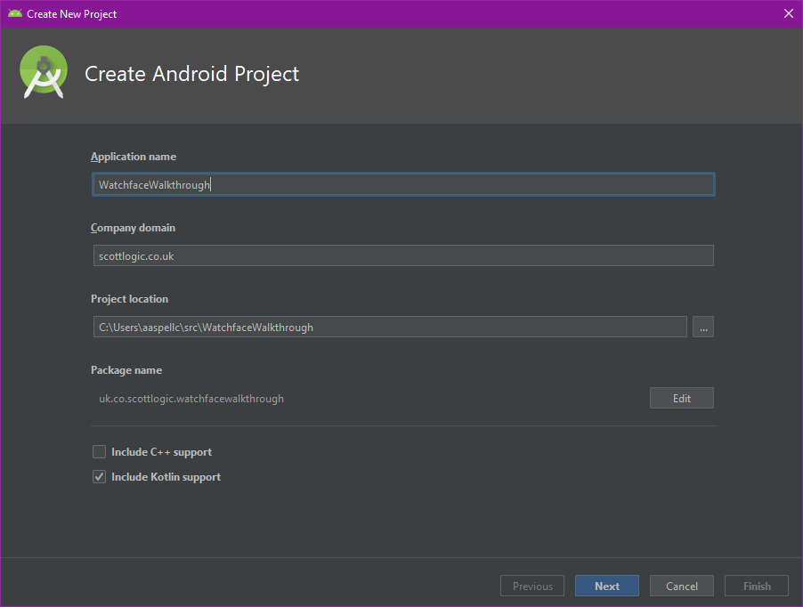
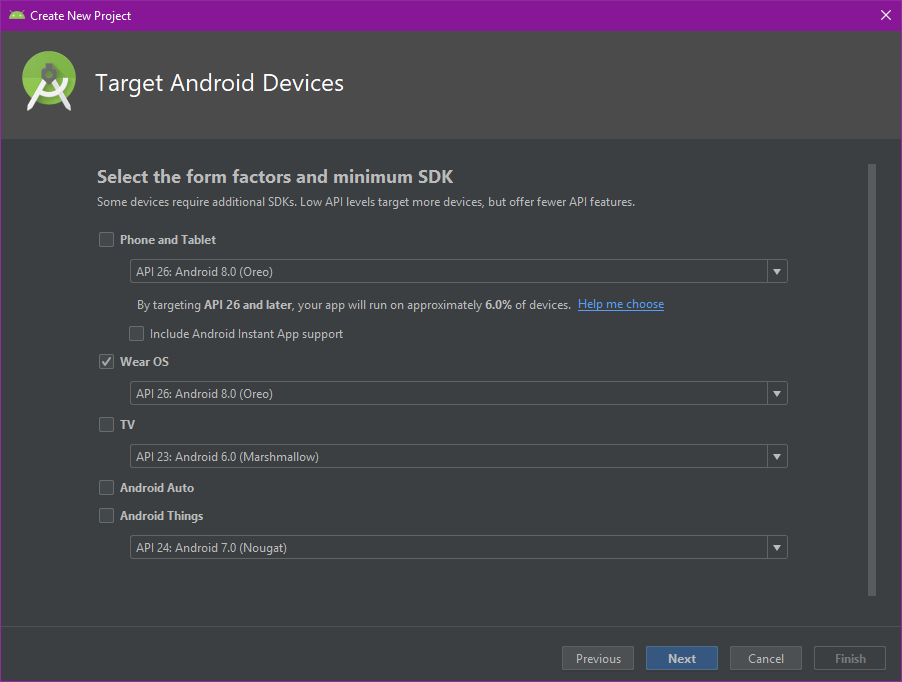
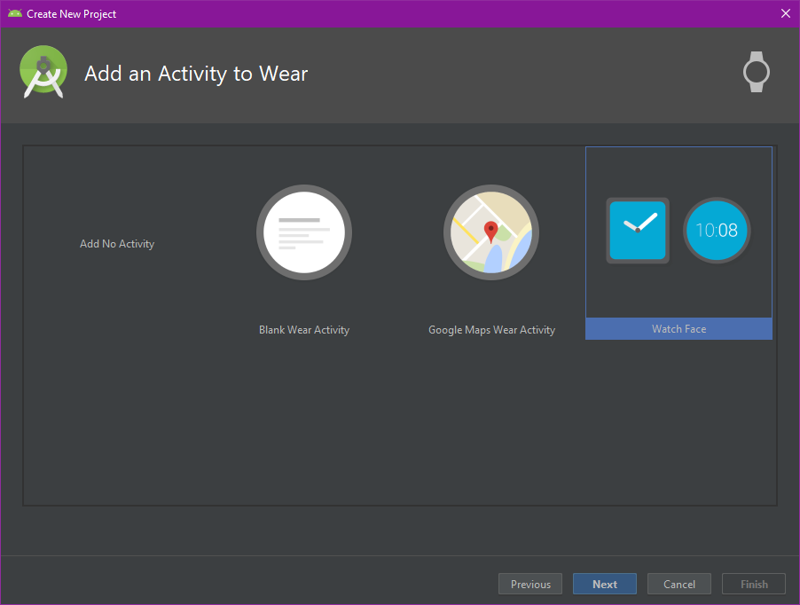
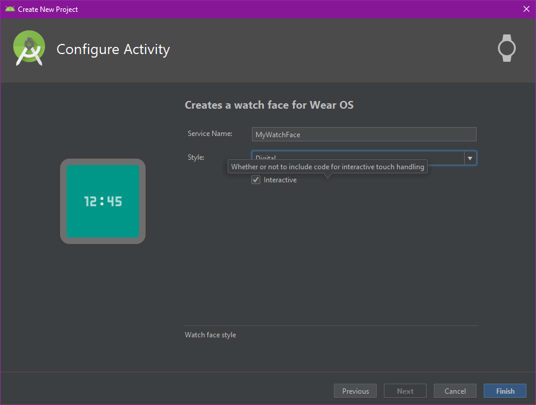
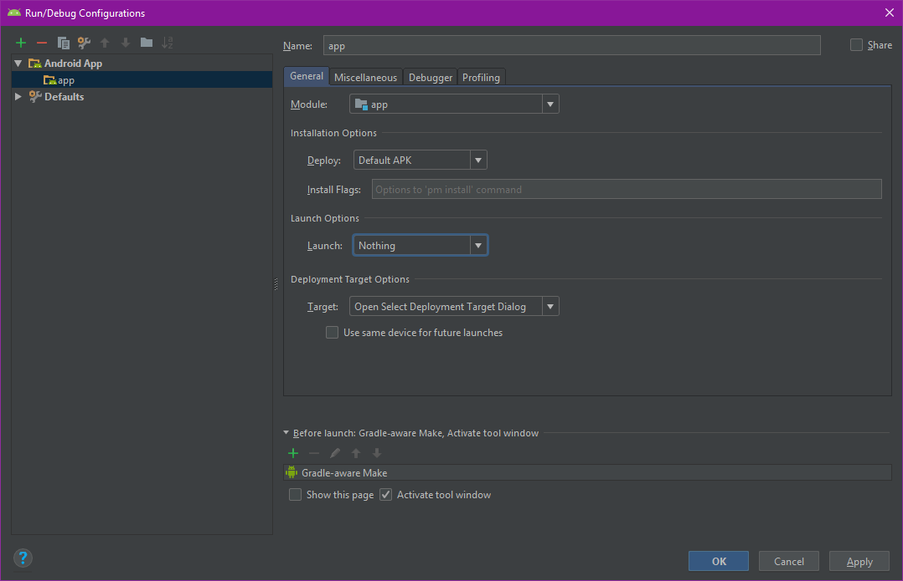
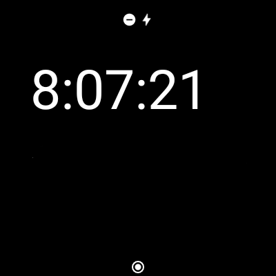
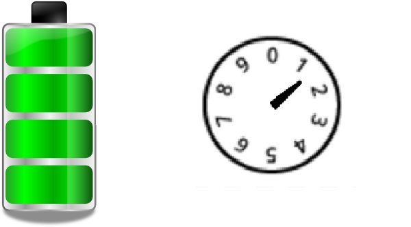
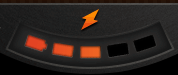

Creating a Watch Face for Android Wear OS 2
Step 1 - Setup my watch for development
I have wanted to create a watch face for android wear for a while, but as no new watches were being released my old Moto 360 watch running wear os 1.0 got out of date and I stopped using it.
For Christmas 2018 I got a new wear os watch running wear os 2.2 (android os 8.0.0). it has a round 400 x 400 screen and I decided to finally get round to creating myself a custom watch face for it.
The first thing I do with all my android devices is to enable developer options. if you don’t know how to do that then you can find the method using a google search. I won’t give it hear as it opens up all sorts of options that could make android become slow/unusable.
Once I had developer options enabled, I turned on USB debugging. This watch (as opposed to my old Moto 360) has a USB connection to the computer, so I don’t have to use WiFi debugging (which has to be set up for each debugging session).
now on to the watch face creation.
Step 2 - get the sample watch face running on a watch
A lot changed between Android wear 1.x and Wear OS 2.x.
The major change is that wear os 2.x allows apps built specifically for a watch with no phone part. in android wear os 1.x you had to build a phone app and add a module that would be installed on a watch. the users had to install the phone app and the watch part would be automatically installed.
As a watch face doesn’t need anything to be running on the phone, it is purely a Wear OS app, but a watch face app has certain limitations.
for my watch face, I would base it on the new watch I got which has a 1.39” round screen with a size of 400x400 pixels.
Now one thing I wondered was how do you have a round screen with a size of 400x400 pixels?
Turns out that the 400x400 is the bounding box which the round display is inside, so the display is actually a circle of 400 pixels diameter.
So now I know how much screen real estate I have to play with, what do I want to display? As this is a learning exercise (learning kotlin and android watch face development) I decided to keep it simple, I’d display the Scott Logic logo, the time and watch battery percentage.
First thing was to get a watch face project up and running. to do that is really simple with the Android Studio IDE. Once Android studio is running, select “Create New Project”.
I am going to base this post on Android Studio 3.2 which is the version I am using. (the new project wizard has changed in version 3.3 and no longer matches the screenshots)
Once “New Project” had been selected you will see the new project wizard:

The details here will be familiar to Android and Java developers, so I won’t explain them.

on the next screen in the wizard, we uncheck Phone and Tablet and check Wear OS. This will give us a project that just contains the new watch face.

This screen allows us to select what the Wear OS app will contain. I selected Watch Face.

This is the last screen in the wizard and allows us to select an analog or digital sample watch face. I selected a digital watch face.
Once the project was created by Android Studio, I hit “Run” and immediately hit the first (of many) issues.
Error Running app : Default Activity not found
“Huh?” I thought to myself. “This is the default project created by Android Studio. Surely it should execute?”
But no, the new project wizard was created before you could create watch faces and so it sets up the default run configuration to execute the projects “Default” activity when it is run.
So to fix this I had to open the run configurations dialog box and change the Launch Options->Launch dropdown from Default Activity to Nothing (more on this later).

Now I hit “Run” again and it showed me the “select deployment target” dialog with my watch appearing in the list of devices. Great, but not so fast. it says Missing feature : Watch.
Really? the device is a watch and yet it says Missing feature : Watch? okay, what do I do now? over to Google.
Apparently this is caused by the Wear OS implementation not being 100% Google Android Wear OS despite the about screen telling me it’s “Wear OS by Google” version 2.2, and according to the internet (which is always right?) to fix this problem I have to edit my AndroidManifest.xml file and change the line:
<uses-feature android:name="android.hardware.type.watch">
to
<uses-feature android:name="android.hardware.type.watch" android:required="false" />
So I edited my AndroidManifest.xml, hit run and lo and behold, I get the same error message.
The actual reason this message is being displayed is that I have not accepted the debugging certificate on the watch. to get the watch to display the request I had to use the adb devices command with the watch connected via usb (not over wifi, which I also tried. wifi debugging only works after the certificate has been accepted over a usb connection).
Once the certificate has been accepted I hit “Run” again and it showed me the “select deployment target” dialog. I selected my watch and hit pressed “Okay”.
Great. Then I look at my watch and it’s still showing the old watch face. On the watch it didn’t automatically show the newly installed watch face, I have to change it manually.
And finally, I have my newly created watch face displayed on my watch.

okay, a bit boring I know, but now we have the skeleton to work from. Also. it’s interesting to note that the screenshot (which came directory from the watch) is square, so the screenshot is of the canvas, and not what the end user sees (which is round).
Step 3 - customise default watch face
the first decision was what to have as a background. naturally, I decided to use the Scott Logic logo, but the standard logos don’t fit a square, so I decided to use Scott Logic’s “Social” logo.
This is where we realise that an Android Wear OS watch face is not a normal Android App. According to the codelab Create a watchface for Wear OS
A watch face is essentially a native service that runs in the background on a Wear OS device. Within this service, there is an engine that renders each screen. You can think of this as an animator flipping through a book of moving cartoon drawings. Our code will fill each of these pages, making the watch face move.
What this means in practice is that there are no activities in a Wear OS watch face, and no xml layouts. a watch face is drawn directly onto a canvas with drawing primitives. In a normal Android activity, I would simply set the background of the control to be the image either in xml or in code and viola, the background is there. The background image will scale itself to match the control it is the background of.
In a watch face I have to draw the image myself (which means using bitmap, not vector drawables), but first the image needs
to be scaled, using the Bitmap.createScaledBitmap() function, to make it fit the watch display. Once the bitmap image is
the correct size it can be drawn on the canvas using drawBitmap()
As this is a watchface app, it will be running all the time. To save battery Wear OS has two modes for displaying a watchface,
interactive and ambient. The reason to have to modes is simple. lots of colour and animations drain battery life, so in
ambient mode the idea is to use few colours and limit any animations.
Due to this, I decided to only draw the Scott Logic logo when in interactive mode.
So, I altered the code to draw the scaled logo as a background image with its origin coordinates as 0,0 (top left of the screen)
Well, it’s there, but the time digits really get in the way.
Looking at the logo, there is room underneath it that looks big enough for the time, so I adjusted the coordinates of the time display (which were being drawn at 45,90 to draw the time at 45,200 which moves the time to the bottom of the screen. I also had to decrease the size of the text being drawn to make it fit in the space.
Okay, we now have the logo and time displayed. now we move on to displaying the battery percentage. I have also changed the font the time is displayed in to match the Scott Logic Brand guidelines.
Step 3 - add battery percentage as there is a small amount of empty space above the Scott Logic logo, I decided to put the battery percentage there. With a bit of fiddling, I settled on displaying the watch battery percentage icon at 50,30 with the percentage text next to the icon at 75,60. I also changed the text colour to be Scott Logic primary bold orange, because I like orange, and it’s available in the brand guidelines.
and this is what it looks like on a round display:
seeing the percentage as text is okay, but a nice gauge would be more aesthetically pleasing. Now the fun starts. How to display a graphical representation of the battery percentage? There are many ways. The two major styles would be a box and a dial.

there are lots of combinations where a segmented dial is displayed, and as I have a round watch face a segmented dial is my aim for the battery meter.
I want something like this:

I did search for an example of drawing this type of meter but did not find anything, so I started looking at how to draw things on an android wear canvas. the most suggested method for drawing things like watch hands is to rotate the canvas, draw the image and then rotate the canvas back.
but then I found the drawArc() function. okay this lets me draw a nice arc by defining the bounding box (400 x 400 so that it is centred on my display), a radius and stroke thickness.
so I drew an arc which represented the current state of the battery by drawing 100 arcs. each arc represents one percent of the battery and I change the color of the arc when I pass the current battery level, so if the battery is at 67%, then I draw the arcs up to and including 67 in orange and the rest of the arcs in charcoal.
sounds easy, but for quite a while I forgot to set the style in the Paint object to stroke, so the arc would not paint on the canvas
even though when I set useCentre to true (which paints the entire segment from it’s outer diameter to the centre (see here for an explanation) the segment drew on the screen. Once I set the Paint.style to stroke, the arc displayed as expected.
and again, this is what it looks like on a round display:
Well, this works and by making each arc 1.5 degrees I get a nice size to the battery meter. But this is drawing 100 arcs each time the display is redrawn (which is often in interactive mode, and we don’t display the meter in ambient mode). There must be a better way.
Then I remembered Z order for drawing. Simply draw an orange box to represent the battery level, and then draw a bitmap on top of it to mask off the shape I want, so that the orange meter colour shows through the spaces left in the bitmap.

For now, I have a functioning watch face. it’s not that pretty, but I’ve learned a lot about how a watch face gets drawn.
My next step is to use GIMP to design a background that has ‘holes’ for the battery meter and see what that looks like.